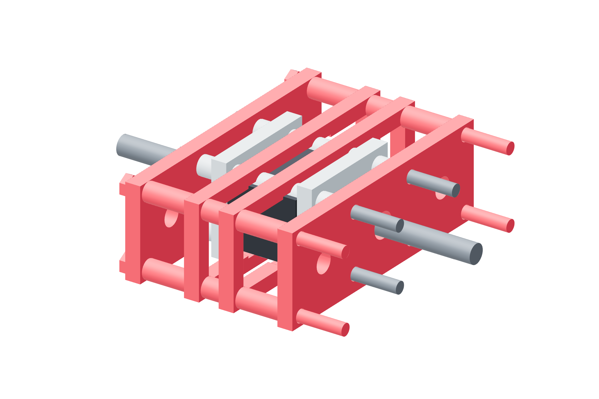

Screw drives / six force links57 / 179
Build the captured nut-side cage
The guided metal force link sits between each screw nut cartridge and its carriage or clevis output. Its shoulders keep the output captured after a trip.
AddPer link: 2 end / 2 shoulder plates · 8 M5 × 90 / two washers / locking nuts · measured metal tube set
Tools / setup4 mm hex · wrenches · square

- Build the two nut faces around the 29 mm printed shell and four 30 mm metal spacers.
- Start the outer metal cage ties and their metal tubes around the cartridge middle.
- Seat the end/shoulder plates square to the screw axis in opposite pairs.
- Keep the central opening clear for the guided output shuttle; no tie or bracket may bypass the springs.
Ready when
The metal cage is attached to the single driving nut and every structural clamp bears on metal spacers, leaving the printed shell unloaded by tie preload. A direct rigid bypass to the output defeats overload detection. Correct that load path before adding the shuttle.